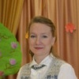
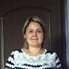

Дошкольное отделение Центра на проспекте Вернадского
В 2015 году 36% первоклассников Центра на проспекте Вернадского пришли из дошкольного отделения.
- Ленинский проспект, 156к1
- Ленинский проспект, 156к1
- Ленинский проспект, 156к1
- улица 26 Бакинских Комиссаров, 3к4
Воспитатели
Воспитатели, которых чаще всего благодарят родители (отзывы и профили сотрудников взяты с официального сайта школы):|
Воспитатель
Шабалина Ольга Вячеславовна
5 благодарностей |

Муз. рук.
Воробьева Ольга Владимировна
2 благодарности |

Воспитатель
Козлова Анна Николаевна
2 благодарности |
Дефектолог
Каледина Татьяна Михайловна
1 благодарность |
|
Психолог
Капицкая Ирина Петровна
1 благодарность |
Воспитатель
Пугачевская Тамара Сергеевна
1 благодарность |
Старший воспитатель
Еременко Галина Ивановна
1 благодарность |
Дефектолог
Андреева Екатерина Львовна
1 благодарность |
|
Воспитатель
Шаханова Елена Александровна
1 благодарность |
Воспитатель
Тамарина Наталья Евгеньевна
1 благодарность |
Старший воспитатель
Чугриева Ольга Павловна
1 благодарность |
Дефектолог
Сироткина Татьяна Юрьевна
1 благодарность |
Отзывы
Данные собраны c официального сайта школы и через форму для отзывов.
3 марта 2016г в средней группе комбинированной направленности для детей с нарушенным и сохранным слухом
(группа №4 «Солнышко») прошёл тематический праздник к 8 марта, посвящённый мамам и бабушкам.
Праздник удался на славу. Это было чудесно! Полный восторг от увиденного!
Дети и воспитатели были в роскошных костюмах. Ребята пели и танцевали, читали стихи, играли на музыкальных инструментах и участвовали в конкурсе по приготовлению супа и компота. Это было красочно, эмоционально и очень зрелищно.
Огромное спасибо мы, родители, хотим сказать нашим дорогим и любимым воспитателям: Тамариной Наталье Евгеньевне, Дмитриевой Яне Дмитриевне, учителю-дефектологу Сироткиной Татьяне Юрьевне и музыкальному руководителю Воробьевой Ольге Владимировне за прекрасный праздник, за море эмоций и чудесное настроение. Эта профессиональная и качественная работа с детьми. Так держать! Молодцы!!!
Вложенный файл
(группа №4 «Солнышко») прошёл тематический праздник к 8 марта, посвящённый мамам и бабушкам.
Праздник удался на славу. Это было чудесно! Полный восторг от увиденного!
Дети и воспитатели были в роскошных костюмах. Ребята пели и танцевали, читали стихи, играли на музыкальных инструментах и участвовали в конкурсе по приготовлению супа и компота. Это было красочно, эмоционально и очень зрелищно.
Огромное спасибо мы, родители, хотим сказать нашим дорогим и любимым воспитателям: Тамариной Наталье Евгеньевне, Дмитриевой Яне Дмитриевне, учителю-дефектологу Сироткиной Татьяне Юрьевне и музыкальному руководителю Воробьевой Ольге Владимировне за прекрасный праздник, за море эмоций и чудесное настроение. Эта профессиональная и качественная работа с детьми. Так держать! Молодцы!!!
Вложенный файл
Хочу выразить огромную благодарность воспитателям детского сада 719 Тамаре Сергеевне, Анастасии Витальевне и помощнику воспитателей Татьяне Александровне.Хочу отметить их высокий профессионализм,чуткое отношение к детям,заботу,внимание,доброту и теплоту,индивидуальный подход к каждому ребёнку.Воспитательный процесс организован таким образом,что учитываются все мелочи жизни ребёнка в семье и коллективе.Мой сын с радостью идёт в сад,потому что там его встречают любимые воспитатели ,с которыми детям интересно,легко и комфортно.В группе царит тёплая обстановка благодаря пониманию и равноправию.Воспитатели учат детей дружить и уважать друг друга,творить и фантазировать,быть честными,добрыми,заботливыми.Наши дети гордятся своими достижениями,с радостью показывают нам свои поделки.Шаг за шагом под чутким руководством дети познают окружающий мир,свои личные возможности,готовятся к школе.В группе чистота и порядок,комфорт и уют.Огромное спасибо и низкий поклон за любовь,терпение,умение и большое сердце! Мама Чашемова Вани,Чашемова Елена.
Хочу выразить огромную благодарность детскому саду №719, воспитательницам подготовительной группы №5 Ольге Николаевне и Елене Юрьевне.
Благодаря их труду в садике царит очень дружеская атмосфера. Это на самом деле так, и это очень важно. Деткам комфортно, они знают что такое настоящая дружба, поддержка. Им привиты такие качества, как честность, благородство, отзывчивость.
Я отдавала своего ребенка каждое утро с легким сердце и спокойной душой - я точно знаю, что ему там было хорошо, уютно, комфортно.
Старший воспитатель Чугриева Ольга Павловна всегда выслушает, посоветует, примет меры (если такое потребуется). Ни одна моя просьба не была не замечена или проигнорирована.
В садике таке же есть прекрасные логопед Веселова Дарья Евгеньевна. Я первый раз столкнулась с личным контактом с родителями через электронную почту: нам присылались задания, чувствовался 100% инивидуальный подход к каждому ребенку. Видно было, что моего ребенка смогли мотивировать, он очень старается и у него стали получаться нужные, правильные, звуки. Спасибо большое!
Чудесный садик.
Благодаря их труду в садике царит очень дружеская атмосфера. Это на самом деле так, и это очень важно. Деткам комфортно, они знают что такое настоящая дружба, поддержка. Им привиты такие качества, как честность, благородство, отзывчивость.
Я отдавала своего ребенка каждое утро с легким сердце и спокойной душой - я точно знаю, что ему там было хорошо, уютно, комфортно.
Старший воспитатель Чугриева Ольга Павловна всегда выслушает, посоветует, примет меры (если такое потребуется). Ни одна моя просьба не была не замечена или проигнорирована.
В садике таке же есть прекрасные логопед Веселова Дарья Евгеньевна. Я первый раз столкнулась с личным контактом с родителями через электронную почту: нам присылались задания, чувствовался 100% инивидуальный подход к каждому ребенку. Видно было, что моего ребенка смогли мотивировать, он очень старается и у него стали получаться нужные, правильные, звуки. Спасибо большое!
Чудесный садик.
Новогодний праздник 2015 в ГБОУ №1635
Хочу написать отзыв, а вернее, благодарность за проведение Новогоднего утренника в детском саду №1635. Дорогие воспитатели: Шаханова Елена Александровна и Еременко Галина Ивановна
музыкальный руководитель: Воробьева Ольга Владимировна
психолог: Капицкая Ирина Петровна
учитель по физкультуре: Горностаев Игорь Сергеевич
учитель-дефектологии: Андреева Екатерина Львовна и Каледина Татьяна Михайловна
Хотим вам от всех родителей сказать огромное спасибо за великолепный праздник! Сценарий мероприятия продуман. Именно это и дало возможность всем детям показать свои способности. Именно всем – не было ни одного ребенка, который бы не принял участия. Одни читали стихи, все вместе пели песни, водили хоровод, танцевали. Многие приняли участие в сценках и конкурсах.Не только дети ,но и родители окунулись в атмосферу праздника, сказки и волшебства! Особенно удивил танец снежинок и гномов. Всё отлично отрепетировано, интересно, видно, что подошли с душой к организации утренника. Благодаря необычному сценарию, перевоплощениям было интересно и весело всем. Красивая, нежная Снегурочка, органичный Дед Мороз и Баба Яга сумели убедить детей в существовании чуда .Даже малыши, которых привели родители на праздник к старшим братишкам и сестрёнкам были полностью заворожены происходящим.Подарки для детей были очень хороши! Спасибо каждому сотруднику за его работу, за его внимание и тепло, подаренное нашим детям, у вас очень важная миссия: вложить в детей добро и теплоту, понимание, любовь, позитив и желание стремиться всегда к лучшему, и Вы это делаете! Огромное Вам за это спасибо и поклон!
Хочу написать отзыв, а вернее, благодарность за проведение Новогоднего утренника в детском саду №1635. Дорогие воспитатели: Шаханова Елена Александровна и Еременко Галина Ивановна
музыкальный руководитель: Воробьева Ольга Владимировна
психолог: Капицкая Ирина Петровна
учитель по физкультуре: Горностаев Игорь Сергеевич
учитель-дефектологии: Андреева Екатерина Львовна и Каледина Татьяна Михайловна
Хотим вам от всех родителей сказать огромное спасибо за великолепный праздник! Сценарий мероприятия продуман. Именно это и дало возможность всем детям показать свои способности. Именно всем – не было ни одного ребенка, который бы не принял участия. Одни читали стихи, все вместе пели песни, водили хоровод, танцевали. Многие приняли участие в сценках и конкурсах.Не только дети ,но и родители окунулись в атмосферу праздника, сказки и волшебства! Особенно удивил танец снежинок и гномов. Всё отлично отрепетировано, интересно, видно, что подошли с душой к организации утренника. Благодаря необычному сценарию, перевоплощениям было интересно и весело всем. Красивая, нежная Снегурочка, органичный Дед Мороз и Баба Яга сумели убедить детей в существовании чуда .Даже малыши, которых привели родители на праздник к старшим братишкам и сестрёнкам были полностью заворожены происходящим.Подарки для детей были очень хороши! Спасибо каждому сотруднику за его работу, за его внимание и тепло, подаренное нашим детям, у вас очень важная миссия: вложить в детей добро и теплоту, понимание, любовь, позитив и желание стремиться всегда к лучшему, и Вы это делаете! Огромное Вам за это спасибо и поклон!
В детский сад, как домой!
Дружба нашей семьи с детским садом № 719 началась еще в 2001 году, когда мой сын Георгий стал посещать это дошкольное учреждение. Он был в группе, где воспитателем была Ольга Вячеславовна. За все годы, что сын ходил в группу никаких нареканий с нашей стороны не было, а только «спасибо»! В группе всегда была дружная, хорошая атмосфера.
В сентябре 2014 года в этот садик пошла моя дочь Ольга. Ребенок не простой, с характером. Как же мы были рады, когда узнали, что воспитателем в группе будет Ольга Вячеславовна. О втором воспитателе тоже только положительные отзывы. Анна Николаевна заботится о детках, как о родных! Дети всегда умыты, опрятны, накормлены и выспавшиеся в тихий час! Дочь идет в садик с радостью, а дома играет в воспитателей.
Атмосфера в самом саду, не только в группе, доброжелательна. Все вежливы и приветливы. Также хочу отметить работу персонала кухни. Ребенок есть в саду с удовольствием.
Огромное спасибо Ольге Вячеславовне, Анне Николаевна, Галине Васильевне и всему коллективу садика за Вашу не простую работу, с которой Вы справляетесь на отлично! Когда мой ребенок в саду, я спокойна.
С уважением, семья Цнобиладзе - Земцовых.
Дружба нашей семьи с детским садом № 719 началась еще в 2001 году, когда мой сын Георгий стал посещать это дошкольное учреждение. Он был в группе, где воспитателем была Ольга Вячеславовна. За все годы, что сын ходил в группу никаких нареканий с нашей стороны не было, а только «спасибо»! В группе всегда была дружная, хорошая атмосфера.
В сентябре 2014 года в этот садик пошла моя дочь Ольга. Ребенок не простой, с характером. Как же мы были рады, когда узнали, что воспитателем в группе будет Ольга Вячеславовна. О втором воспитателе тоже только положительные отзывы. Анна Николаевна заботится о детках, как о родных! Дети всегда умыты, опрятны, накормлены и выспавшиеся в тихий час! Дочь идет в садик с радостью, а дома играет в воспитателей.
Атмосфера в самом саду, не только в группе, доброжелательна. Все вежливы и приветливы. Также хочу отметить работу персонала кухни. Ребенок есть в саду с удовольствием.
Огромное спасибо Ольге Вячеславовне, Анне Николаевна, Галине Васильевне и всему коллективу садика за Вашу не простую работу, с которой Вы справляетесь на отлично! Когда мой ребенок в саду, я спокойна.
С уважением, семья Цнобиладзе - Земцовых.
Если вы нашли ошибку или неточность, пожалуйста, сообщите нам об этом.
Ученик, выпускник или родитель? Оставьте отзыв о детском саде.